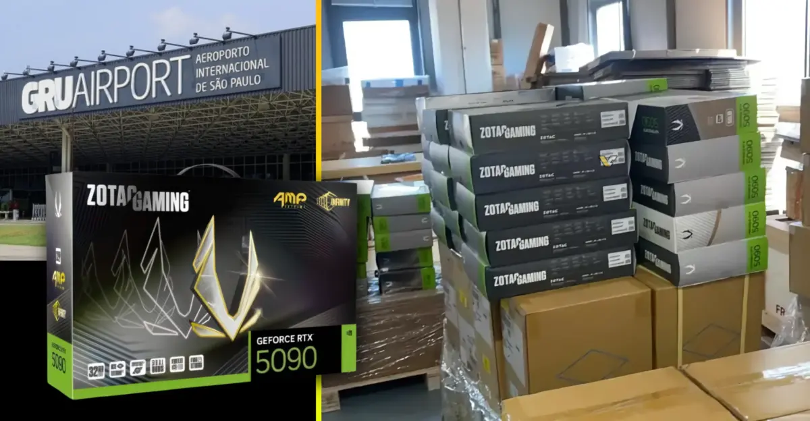

브라질 상파울루 국제공항에서 약 47만 달러(6억 3천만원) 상당의 조탁 지포스 RTX 5090 그래픽 카드 2팔레트가 사라져 유통업체가 경위를 요구하고 있습니다.
브라질 하드웨어 유통업체 오데르소(Oderço)는 상파울루 과룰류스 국제공항에 도착한 조탁 지포스 RTX 5090 그래픽 카드 2팔레트가 분실됐다고 신고했습니다.
분실 물량의 구매 원가는 약 250만 헤알(47만 달러(6억 3천만원))로 추산됩니다.
오데르소 사장 마토스는 10월 16일 공개한 영상에서 공항 측에 여러 차례 화물 위치를 문의했지만 답변을 받지 못했다고 밝혔습니다.
화물 이동을 확인할 CCTV 영상도 확보하지 못한 상태입니다.
회사는 2008년 하드웨어 수입을 시작한 이후 처음으로 화물 분실을 겪었습니다.
분실된 그래픽 카드의 정확한 수량과 세부 모델은 공개되지 않았습니다.
브라질에서 RTX5090의 소매 가격은 장당 약 33,000~39,000헤알(6,200~7,300달러(827만원~973만원))이지만,
이번 피해액 250만 헤알은 소매 가격이 아닌 유통업체의 구매 원가를 기준으로 합니다.
5090 한파레트에 몇장임?
사라져 -> 도둑맞아...
기사를 똑바로 써라